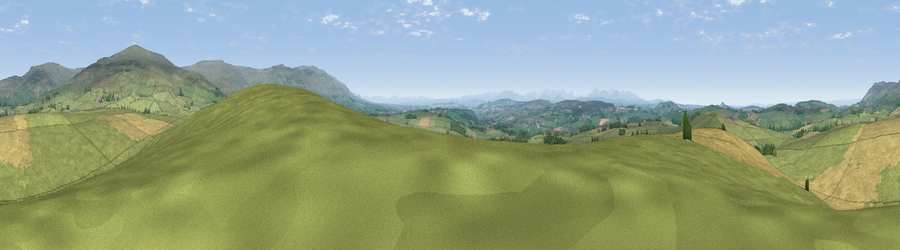

Viewpoint near Renwick
#5630 in England · top 20% of its area beats it · near Renwick · access?Where it is
The exact computed spot (NY 57425 43575). Click the marker for map links.
Public access: no public right of way or access land is recorded at this exact spot — it may be on private land. Computed from Natural England's CRoW access layer and OpenStreetMap rights of way — not the legal definitive map. Always verify locally.
The view, rendered

A 360° render of this exact spot computed from the terrain model, tree cover and land cover — summer colours, afternoon light, calibrated against photographs of famous viewpoints. Real trees, hedges and buildings will differ in detail.
The panorama
Grey silhouette: terrain skyline in each direction (720 bearings, Earth curvature and refraction included). Dashed green: skyline with trees (+15 m) and buildings (+8 m) as obstacles. Blue strip: how far the ground is visible on each bearing.
Where the view opens
Wedge length = distance to the farthest visible ground on that bearing (vegetation-aware). Rings at 10, 25 and 50 km.
What fills the view
75% grassland · 20% cropland · 5% woodland
Angular shares of the visible panorama (visual magnitude), not map area. Landscape diversity 0.31 (0–1 Shannon).
Key numbers
More beautiful places nearby
The staircase of upgrades: each row has a higher view potential than everything closer. Driving times are estimates from straight-line distance, calibrated against real road routing — check an actual route before setting out.
| Place | Direction | Drive | Score |
|---|---|---|---|
| Scales Rigg | E · 1 km | ~2 min | 70.0 |
| Ruckcroft Hill | WNW · 4 km | ~9 min | 72.5 |
| Viewpoint near Renwick | NE · 4 km | ~10 min | 74.0 |
| Thack Moor | NE · 5 km | ~10 min | 77.1 |
| Viewpoint near Cumrew | N · 9 km | ~17 min | 78.8 |
| Barrock Fell | WNW · 11 km | ~21 min | 81.1 |
| Viewpoint near Watermillock | SSW · 25 km | ~41 min | 82.6 |
| Viewpoint near Watermillock | SSW · 26 km | ~41 min | 83.5 |
54.78526, -2.66354 · source: screening · position refined by local search. Computed location — check access rights before visiting.